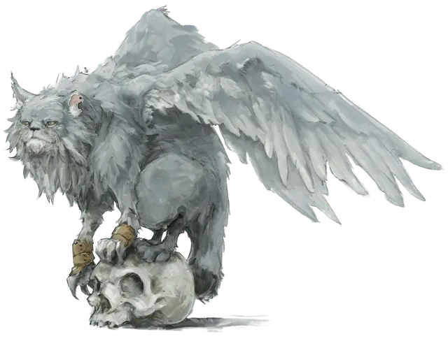

Трессим
Tressym
Крошечный Монстр, любое мировоззрение

Класс Доспеха 12
Хиты 5 (2к4)
Скорость 40 футов, летая 40 футов, лазая 30 футов
| мод | спас | ||
|---|---|---|---|
| СИЛ | 3 | −4 | −4 |
| ЛОВ | 15 | +2 | +2 |
| ТЕЛ | 10 | +0 | +0 |
| мод | спас | ||
|---|---|---|---|
| ИНТ | 11 | +0 | +0 |
| МДР | 12 | +1 | +1 |
| ХАР | 12 | +1 | +1 |
Навыки Восприятие +5, Скрытность +4
Иммунитет к урону яд
Иммунитет к состояниям отравление
Чувства тёмное зрение 60 футов, пассивное Восприятие 15
Языки Понимает Общий, но не говорит
Опасность 0
Бонус мастерства +2
Особенности
Тонкий нюх. Трессим совершает с преимуществом проверки Мудрости (Восприятие), полагающиеся на обоняние.
Обнаружение невидимости. В пределах 60 футов от трессима магическая невидимость не может скрыть ничего от его зрения.
Чутьё на яд. Трессим может обнаружить, что вещество отравлено, по запаху, прикосновению или вкусу.
Трессим-фамильяр. С разрешения Мастера персонаж, накладывающий заклинание поиск фамильяра [find familiar], может призвать трессима вместо обычной кошки.
Действия
Когти. . Рукопашная атака оружием: +0 к попаданию, досягаемость 5 футов, одна цель. Попадание: 1 рубящего урона.
Описание
Этот шаловливый летучий кот размером примерно с домашнюю кошку, но с крыльями размахом 3 фута.
Ходят слухи, что трессимы — плод волшебных экспериментов над домашними кошками. Трессимы разумны и способны заводить долгую дружбу с гуманоидами, особенно следопытами и волшебниками. С другими представителями своего вида трессимы могут поладить, но редко живут или охотятся вместе. Они мирно игнорируют летучих мышей, волшебных дракончиков и тому подобных существ, но терпеть не могут кровососов и злых летучих чудовищ вроде мантикор. А ещё они любят дразнить собак.
Трессимы питаются мелкими грызунами, птицами и насекомыми. Охотятся они как обычные кошки, только ещё и используют крылья. Впрочем, трессимы не разоряют гнёзда и не воруют яйца.
Трессимы встречаются для размножения, но не заводят постоянных партнёров. Они скрещиваются и с обычными кошками, но только один из десяти потомков окажется трессимом, остальные будут просто кошками.